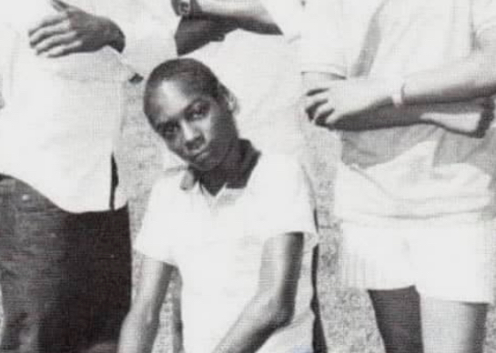
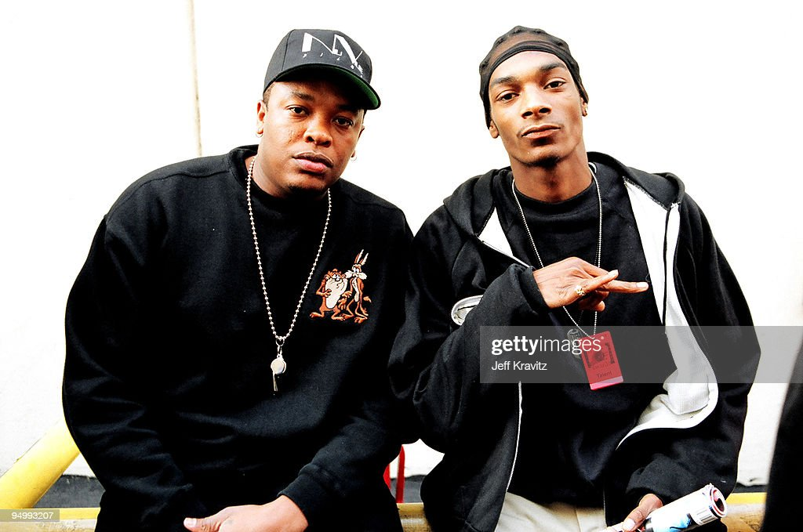
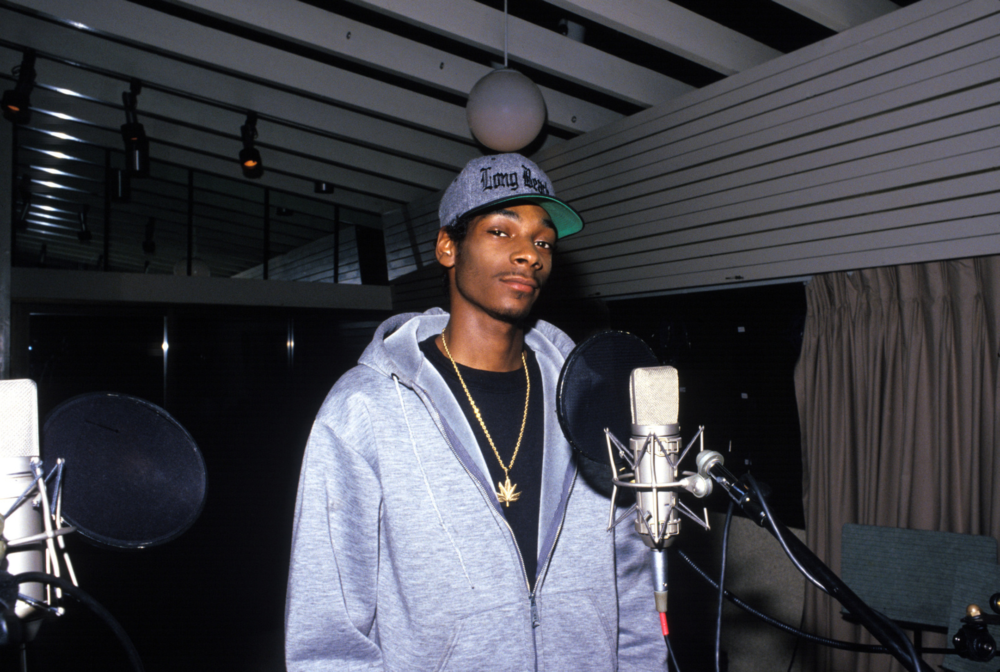
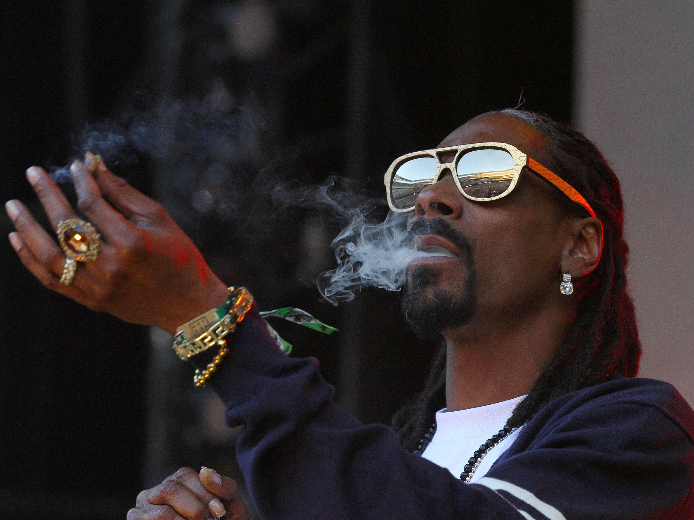

Calvin Cordozar Broadus nacio en Long Beach, California el 20 de octubre de 1971, conocido artísticamente como Snoop Dogg, es un rapero, empresario, productor y actor estadounidense. Fue miembro de la banda Crips cuando estudiaba en el instituto. Algún tiempo después de su graduación, fue arrestado por posesión de cocaína. Su carrera musical comenzó en 1992 después de ser puesto en libertad, cuando fue descubierto por Dr. Dre.

Primero en el tema principal del largometraje Deep Cover, y después con criss monstar en el álbum debut en solitario de Dr. Dre, The Chronic, junto con otros miembros de su antiguo grupo, Tha Dogg Pound. La contribución de Snoop en The Chronic fue considerable; su presencia en el disco es notable y preparaba el terreno para su lanzamiento en solitario.

Su album debut, Doggystyle, fue lanzado finalmente en noviembre de 1993 por Death Row Records, y se convirtió en el primer álbum de la West Coast en debutar en primer puesto en las listas. En Doggystyle, al igual que en The Chronic, colaboraron una multitud de raperos afiliados a Death Row como Daz Dillinger, Kurupt, Nate Dogg y Warren G, entre otros. Este álbum está considerado por la mayoría de los admiradores de Snoop como el mejor de su discografía.

Snoop volvió a sus inicios en el 2017 con el álbum Neva Left (Nunca me fui) en el cual volvemos a escuchar los sonidos clásicos del Snoop Dogg de los primeros años. El rapero ha incursionado en otros ámbitos, además de su participación en la lucha libre, Snoop Dogg tiene su web Merry Jane, un portal para los amantes de la marihuana. De esa manera él aborda el tema como un estilo de vida. También creó un libro de cocina bastante peculiar con recetas sencillas para toda ocasión. El otro proyecto más reciente fue su liga de juegos electrónicos con la que se introdujo al mundo de los videojuegos, otra de sus pasiones.